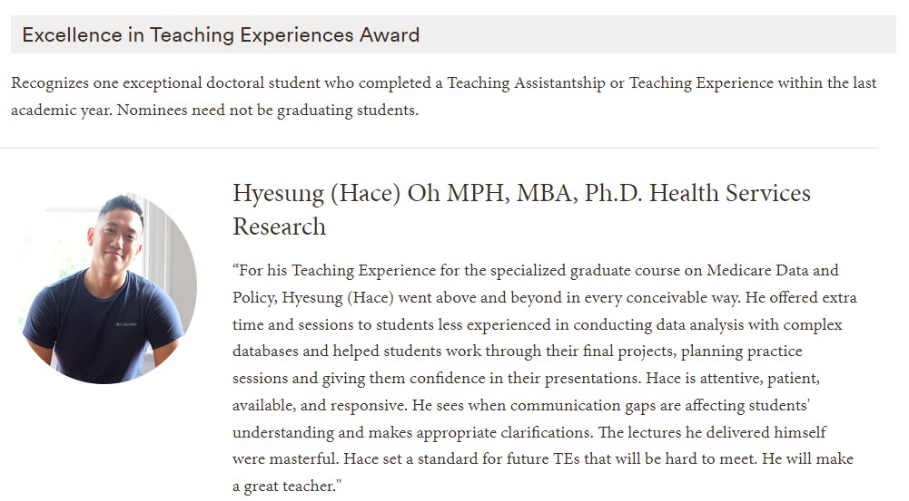

Teaching Experience
How did US healthcare become such a disaster? An investigative think tank (PH398)
Institution: Wheaton College, Massachusetts
Role: Instructor of Record through the Brown-Wheaton Faculty Fellowship
Time Period: Spring 2023
Description: Designed and taught an advanced
seminar exploring the dynamics between healthcare firm profits
and patient welfare.
Course Syllabus
Health Services Research Stata Programming Boot Camp
Institution: Brown University
Role: Lead Instructor and Curriculum Development
Time Period: August 2018 - January 2023
Description: Led the design,
development, and securing of funding for a two-week Stata programming boot
camp for the Health Services Research PhD program. Responsible for teaching
the Brown HSR PhD entering cohorts of 2019, 2020, 2021, and 2022.
Medicare: A Data-Based Policy Analysis (PHP2410E)
Institution: Brown University
Role: Graduate Teaching Associate
Time Period: Fall 2021
Description: Led the applied data analytics
and claims processing component, guiding ten students through
weekly coding labs, evaluating Stata and SAS submissions, and providing
individualized support for research question development and presentation
preparation.

Health Economics (ECON1360)
Institution: Brown University
Role: Graduate Teaching Assistant
Time Period: Fall 2021
Description: Delivered hybrid instruction to a class of
twelve. Led weekly discussion sessions for the entire class, teaching
theoretical and empirical economics concepts through Stata.
Health Economics (ECON1360)
Institution: Brown University
Role: Graduate Teaching Assistant
Time Period: Spring 2021
Description: Delivered online-only
instruction during the COVID-19 pandemic.
Health Care in the US (PHP0310)
Institution: Brown University
Role: Graduate Teaching Assistant
Time Period: Spring 2020
Description: Led two discussion sections of 40
undergraduate students each, focusing on group-based analytical activities and
fostering student engagement.
Stata Programming
Institution: Johns Hopkins University Bloomberg School of Public Health
Role: Graduate Teaching Assistant
Time Period: March 2015 – May 2015 (Spring 2)
Description: Partnered with course professors to build student competency
in Stata statistical software language. Delivered individualized Stata tutoring sessions for master's and doctoral-level
students who requested extra help and graded coding submissions for over 80 students,
providing suggestions for improvement.
Fundamentals of Health Policy and Management
Institution: Johns Hopkins University
Role: Graduate Teaching Assistant
Time Period: January 2015 – May 2015
Description: Taught weekly discussion sections for 26 undergraduate students
on health policy and management fundamentals. Developed weekly lesson plans to
reinforce lecture material and enhance student understanding.
Economics for Decision Making
Institution: Johns Hopkins University Carey Business School
Role: Graduate Teaching Assistant
Time Period: August 2014 – October 2014 (Fall 1)
Description: Led content review sessions for Carey’s foundational
Master’s-level business microeconomics course, helping students solidify their
understanding of core concepts.